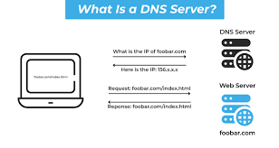

DNS translates domain names into IP addresses.
A Domain Name System (DNS) works like the internet’s “phone book” by translating human-friendly domain names into machine-readable IP addresses. When a user types a website address such as [www.example.com](http://www.example.com) into a browser, the browser first checks if it already knows the IP address. If not, it sends a request to a DNS resolver, which searches for the correct address by communicating with different DNS servers. These include the root DNS server, the top-level domain (TLD) server, and the authoritative DNS server for the specific domain. Once the correct IP address is found, it is sent back to the browser, which then uses it to connect to the web server and load the website. This process happens very quickly, allowing users to access websites using simple names instead of complex numerical addresses.
The Domain Name System (DNS) is important because it makes the internet easy to use by allowing users to access websites using simple domain names instead of complex IP addresses. Without DNS, users would have to remember long numerical addresses like 192.168.1.1 to visit websites, which would be difficult and impractical. DNS also improves efficiency by quickly directing users to the correct web server, ensuring faster access to online resources. In addition, it supports the stability and scalability of the internet by distributing domain information across multiple servers, reducing overload on a single system. It also enhances reliability because if one DNS server fails, others can still provide the required information. Overall, DNS is essential because it makes web browsing simple, fast, and efficient.DNS also helps improve browsing speed by caching previously accessed domain names, allowing faster access to frequently visited websites.